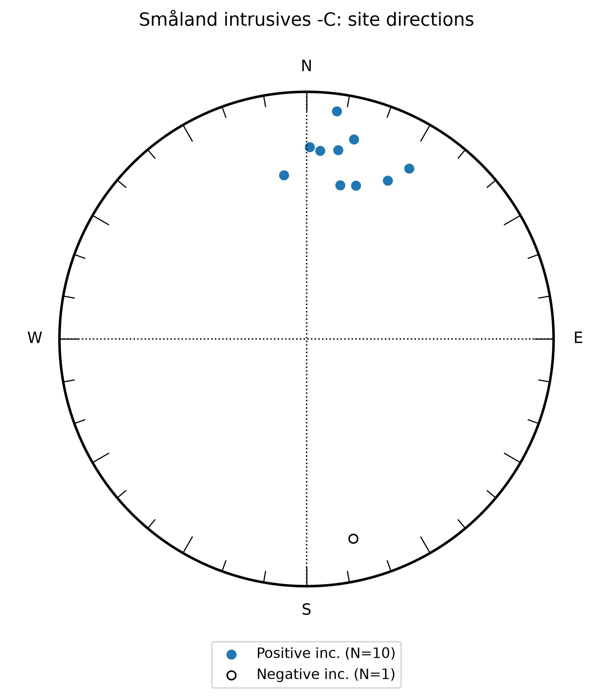
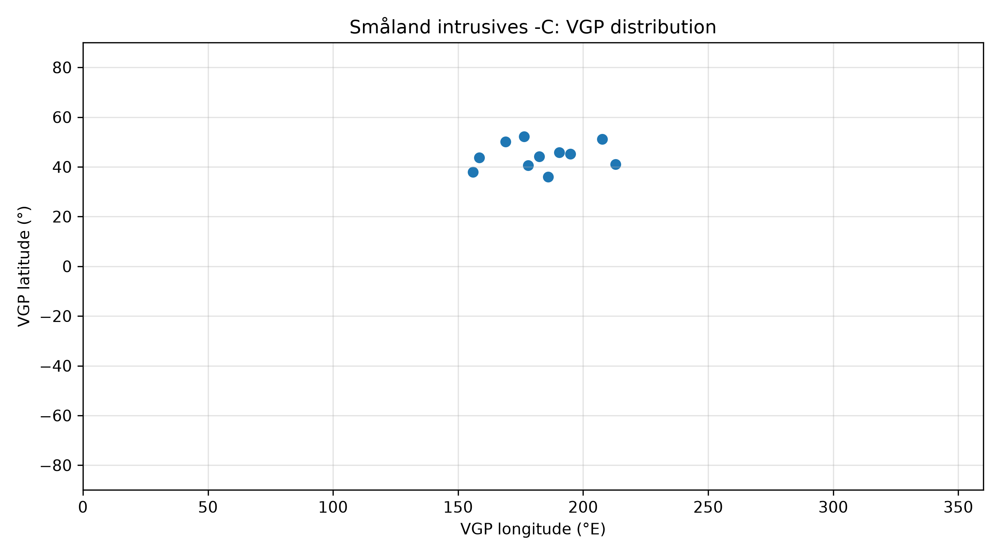

Baltica Precambrian pole assessment prototype
| site | dir_dec | dir_inc | dir_k | dir_alpha95 | dir_n_samples | vgp_lat | vgp_lon | authors |
|---|---|---|---|---|---|---|---|---|
| 1 | 27.1 | 28.8 | 16.6 | 16.9 | 6 | 43.7 | 158.5 | Pisarevsky & Bylund (2010) |
| 2 | 12.3 | 36.5 | 39.8 | 14.9 | 4 | 52.2 | 176.4 | Pisarevsky & Bylund (2010) |
| 3 | 17.9 | 35.1 | 12.4 | 27.2 | 4 | 50.1 | 169 | Pisarevsky & Bylund (2010) |
| 4 | 31 | 20.6 | 41.8 | 12 | 5 | 37.9 | 156 | Pisarevsky & Bylund (2010) |
| 7 | 0.9 | 23.4 | 18.6 | 29.4 | 3 | 45.2 | 194.9 | Pisarevsky & Bylund (2010) |
| 8 | 4.1 | 24.6 | 57.5 | 16.4 | 3 | 45.8 | 190.4 | Pisarevsky & Bylund (2010) |
| 9 | 13.3 | 18.1 | 15.2 | 20.3 | 5 | 40.6 | 178 | Pisarevsky & Bylund (2010) |
| 10 | 9.5 | 23.5 | 14.8 | 20.6 | 5 | 44.1 | 182.4 | Pisarevsky & Bylund (2010) |
| 11 | 7.6 | 7.8 | 22 | 13.2 | 7 | 36 | 186 | Pisarevsky & Bylund (2010) |
| 14 | 352.1 | 33.5 | 49.1 | 7 | 10 | 51.2 | 207.6 | Pisarevsky & Bylund (2010) |
| 15 | 166.8 | -18.2 | 44.2 | 10.2 | 6 | 41 | 212.9 | Pisarevsky & Bylund (2010) |
Source workbook: data/site_level_data_site_comments_added.xlsx;
sheet: Småland intrusives -C.
This table is regenerated automatically from the workbook.
Tilt-corrected site directions for Småland intrusives -C. Filled and open symbols distinguish positive and negative inclinations. This plot shows the scatter of individual site directions behind the mean pole.

Site-level VGPs show the pole scatter behind the published mean pole. This plot is the basis for PSV-style assessment and for checking how the individual sites contribute to the final pole.

Matched site-level sheet: Småland intrusives -C
| site | dir_dec | dir_inc | dir_k | dir_alpha95 | dir_n_samples | vgp_lat | vgp_lon |
|---|---|---|---|---|---|---|---|
| 1 | 27.1 | 28.8 | 16.6 | 16.9 | 6 | 43.7 | 158.5 |
| 2 | 12.3 | 36.5 | 39.8 | 14.9 | 4 | 52.2 | 176.4 |
| 3 | 17.9 | 35.1 | 12.4 | 27.2 | 4 | 50.1 | 169.0 |
| 4 | 31.0 | 20.6 | 41.8 | 12.0 | 5 | 37.9 | 156.0 |
| 7 | 0.9 | 23.4 | 18.6 | 29.4 | 3 | 45.2 | 194.9 |
| 8 | 4.1 | 24.6 | 57.5 | 16.4 | 3 | 45.8 | 190.4 |
| 9 | 13.3 | 18.1 | 15.2 | 20.3 | 5 | 40.6 | 178.0 |
| 10 | 9.5 | 23.5 | 14.8 | 20.6 | 5 | 44.1 | 182.4 |
| 11 | 7.6 | 7.8 | 22.0 | 13.2 | 7 | 36.0 | 186.0 |
| 14 | 352.1 | 33.5 | 49.1 | 7.0 | 10 | 51.2 | 207.6 |
| 15 | 166.8 | -18.2 | 44.2 | 10.2 | 6 | 41.0 | 212.9 |